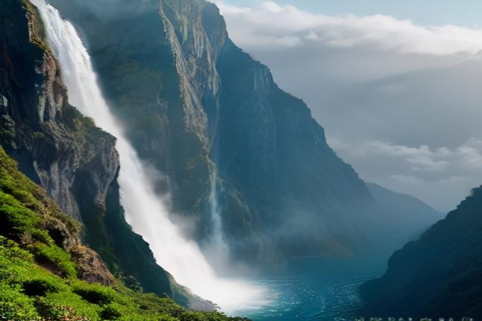
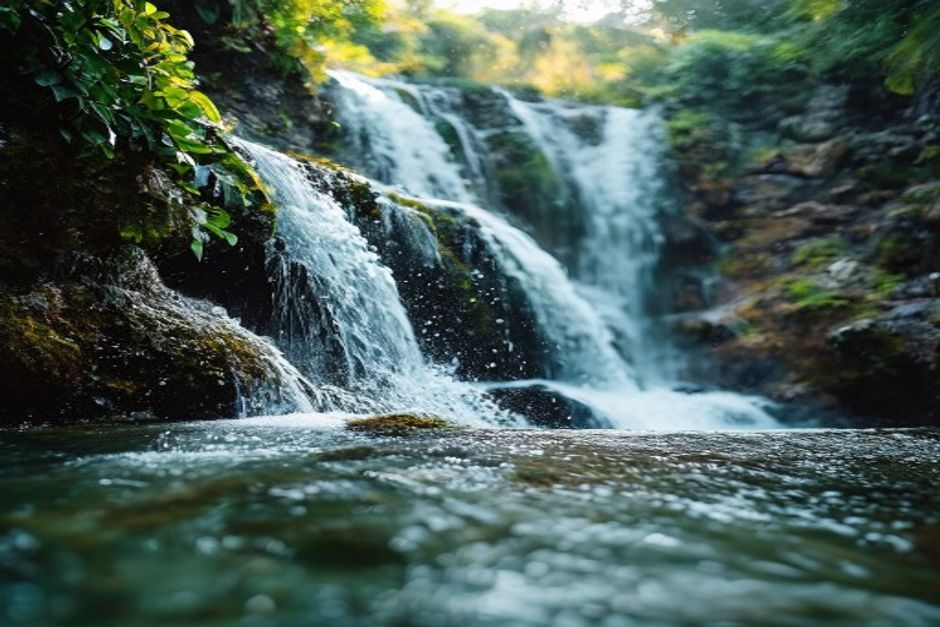

Qui cherche une cascade à Madère trouve vite le même dilemme : certaines se voient depuis la voiture, d'autres se méritent après plusieurs heures de sentier. Voici dix cascades de Madère, classées par effort plutôt que par célébrité, pour choisir selon votre temps, vos jambes et la saison.
Que voir si vous n'avez qu'une journée ?
Madère reçoit une part de pluie parmi les plus fortes du Portugal. L'eau ruisselle des montagnes du centre vers les gorges de la forêt de lauriers, et les levadas, ces canaux d'irrigation creusés pour l'amener jusqu'aux cultures, ont ouvert des sentiers qui mènent au pied de nombreuses chutes. D'où cette densité de cascades, bien plus grande que ce que l'on attend d'une île portugaise.
Pour aller à l'essentiel :
- Zéro marche : Véu da Noiva et Cascata dos Anjos.
- Une petite heure de marche en tout : la cascade de Risco, à Rabaçal.
- Une demi-journée de randonnée : 25 Fontes, ou Caldeirão Verde, le plus spectaculaire.
- Du calme, loin des groupes : Levada do Rei, Garganta Funda, Fajã da Nogueira.
Les cascades que l'on voit presque sans marcher
1. Véu da Noiva, près de Seixal
Le « Voile de la Mariée » tombe d'environ 30 mètres le long des falaises volcaniques et finit directement dans l'Atlantique, sur la côte nord. Un belvédère en bord de route, à côté du parking, suffit : aucune marche. C'est l'arrêt idéal d'un tour de la côte nord en voiture.
2. Cascata dos Anjos, entre Ponta do Sol et Madalena do Mar
La plus insolite de l'île se déverse sur l'ancienne route côtière. On s'arrête, et l'on passe sous l'eau. Ce n'est pas une randonnée, plutôt une douche en bord de route, et un petit moment de photo très prisé sur la côte sud. Gratuit, sans réservation.

Rabaçal : trois cascades pour une seule matinée
C'est le secteur le plus pratique pour qui veut de vraies cascades sans passer la journée à marcher. Les trois sentiers partent du même endroit.
3. Cascade de Risco
Un ruban d'environ 100 mètres sur une falaise tapissée de mousse. On y arrive par la Levada do Risco, plate et facile, en 30 à 40 minutes depuis le parking de Rabaçal, à l'aller comme au retour. C'est l'une des plus hautes de l'île pour l'une des approches les plus courtes.
4. 25 Fontes
Ici, pas de chute unique : des dizaines de sources et de petits filets d'eau coulent le long de parois de basalte jusque dans un même lagon. Comptez environ trois heures aller-retour depuis Rabaçal, et la plupart des visiteurs combinent avec Risco dans la même sortie. Le bassin se prête à une baignade, mais l'eau est glaciale toute l'année.
5. Lagoa do Vento
Un court prolongement après Risco, sur le même réseau de sentiers, mène à cette cascade plus modeste, qui alimente un bassin naturel dans une gorge étroite. Risco et Lagoa do Vento forment un très beau doublé en une demi-journée.
Caldeirão Verde : la plus belle, mais il faut la mériter
6. Caldeirão Verde, Santana
Le « chaudron vert » tombe d'environ 100 mètres dans un bassin entouré de falaises et de forêt de lauriers. On l'atteint par le sentier PR9 depuis le parc forestier de Queimadas, en traversant de petits tunnels percés dans la roche par les constructeurs de levadas au XIXe siècle. Il faut compter environ 13 km aller-retour, donc une demi-journée complète. Beaucoup la considèrent comme le plus beau décor de cascade de Madère.
Cascades de Madère moins fréquentées
7. Água d'Alto (Cascata do Faial), Faial
Une chute d'environ 30 mètres sur la Ribeira do Faial, dans un bassin d'eau claire au milieu de la forêt, non loin de Santana. La marche est courte, environ 3 km aller-retour avec très peu de dénivelé : la plus accessible des cascades de forêt de cette liste.
8. Levada do Rei, São Vicente
Plutôt qu'une chute unique, le sentier suit la Ribeiro Bonito dans une gorge de plus en plus étroite, presque tropicale, bordée de plusieurs petites cascades, et s'achève dans un amphithéâtre rocheux. Environ 9,8 km aller-retour : plus long, mais plus calme que Rabaçal ou Santana.
9. Garganta Funda, Ponta do Pargo
Sur la côte ouest, dans le secteur de Pedregal, c'est l'une des cascades les moins visitées, justement parce qu'elle est la plus loin de Funchal. La route est longue, mais la gorge étroite et abrupte reçoit une fraction de la foule des sites célèbres.
10. Fajã da Nogueira, montagnes du centre
Le départ se fait de l'ancienne Central Elétrica da Fajã da Nogueira, près de Ribeiro Frio. La boucle suit une levada par des sentiers étroits et des tunnels creusés à la main, et passe directement sous plusieurs cascades. C'est la plus aventureuse de la liste : emportez une lampe torche pour les tunnels.
Réservation, prix, baignade : ce qu'il faut savoir
Les deux itinéraires les plus fréquentés, Risco/25 Fontes et Caldeirão Verde, relèvent du système SIMplifica de Madère : une réservation gratuite à horaire fixe, plus un petit droit d'entrée, mis en place pour limiter la surfréquentation. Mieux vaut s'en occuper avant de partir. Les cascades en bord de route, Véu da Noiva et Cascata dos Anjos, sont gratuites et sans réservation.
Pour la baignade, 25 Fontes, Caldeirão Verde et Água d'Alto ont un bassin au pied de la chute. Prévoyez une baignade courte : l'eau reste froide en toute saison.
Quand voir les cascades de Madère au mieux ?
Le printemps, environ de mars à mai, quand les pluies sont encore fréquentes et que les cascades coulent à plein débit. À la fin de l'été, plusieurs des plus petites s'amenuisent nettement. Les trois grandes, Risco, 25 Fontes et Caldeirão Verde, coulent toute l'année.
Pour une bonne partie de l'intérieur de Madère, les cascades ne sont pas un détour : elles sont la raison du voyage.
Et après la montagne, la mer
Courir les cascades, c'est beaucoup de routes de montagne et de sentiers de levada. Une journée sur l'eau fait un contrepoint agréable. Chez Chifbay, le bateau est pour votre groupe seul, jusqu'à 5 personnes, avec deux skippers de Madère. Le départ se fait de la Marina do Funchal, ponton C, à 10 h ou à 14 h : 2 h 30 jusqu'à Ribeira Brava pour 500 EUR, ou 3 h jusqu'à Ponta do Sol pour 600 EUR, avec Câmara de Lobos, Cabo Girão, baignade et paddle à Fajã dos Padres. Cela tombe bien : Ponta do Sol est justement le village de Cascata dos Anjos. Les prix valent pour tout le bateau, et l'annulation est gratuite jusqu'à 24 heures avant le départ.

Si vous préférez une sortie plus courte en fin de journée, la croisière privée au coucher du soleil part 1 h 15 avant le coucher du soleil, toute l'année : 2 h jusqu'à Cabo Girão pour 400 EUR, ou 2 h 30 jusqu'à Ribeira Brava pour 500 EUR, sans baignade. Les expériences et les infos pratiques détaillent le reste. Boissons et repas à bord, vidéo 360° Insta360, images de drone selon la météo et photos prises avec un vrai appareil sont inclus. Pour comparer, vous pouvez aussi consulter notre sélection d'excursions en bateau à Madère.